Inside the GPU decoder
- Kernels written once in Slang and compiled for each backend. Sources in
gpu/kernelsandcore/src/gpu.
A training batch holds GeoZL frames of 16-bit tiles compressed with planar>zigzag>pfor in host memory. The model needs one tensor on the GPU. One route decodes on the CPU and copies full samples to the GPU. That route uses CPU cores and transfers the full raster across the bus.
This page follows compressed frames from host memory to a device buffer. The GPU API does not require these details.
Move the compressed bytes, not the raster
The host-to-device bus limits this transfer. Decoded tiles are often much larger than their frames. CPU decoding then transfers more bytes and uses data-loader cores. Device decoding transfers compressed bytes and a small block task list. In the animation, watch what crosses the bus in each row, and which side's cores do the work.

The codec must support thousands of independent decoding threads. PFOR writes every value of a block with the same bit width, so a thread knows where value i starts without reading anything before it. PivCo replaces the Huffman bit string, where every code waits for the one before it, with bitmaps that threads can read side by side.
A frame goes to the device when it is a single chunk, its last codec is pfor, lanes or one of their fused planar forms, and its samples are one or two bytes wide. The device recipes are id>pfor, planar>zigzag>pfor, id>lanes and planar>zigzag>lanes.
Everything else, zstd, the entropy recipes, NoData, quantized frames, multi-chunk frames, decodes with OpenZL on the CPU and is uploaded as samples. Both kinds can share one call, so a batch with a few odd frames still lands in one tensor.
Waves, and why a PFOR block is 256 values
GPUs run threads in groups that execute one instruction together. It runs them in groups that execute the same instruction together. Slang calls this group a wave. GeoZL's waves are 32 threads wide.
Threads in a wave exchange registers without memory. One thread can broadcast a register to the other 31. The wave can OR a value across all its threads, or give each thread the sum of the values held by the threads before it, a prefix sum. These are register exchanges, with no shared memory, no barrier, no waiting for the slowest thread in a larger group. Cross-wave work needs shared memory and a barrier.
The decoder sizes PFOR work to one wave. Each thread handles 8 values, and 32 threads times 8 values is 256, which is exactly one PFOR block. One wave decodes one block, and four waves make a group of 128 threads.
The animation follows one block through one wave. First every thread finds its eight values. Then, in list mode, the exception positions are folded into one mask that every thread holds. Last, each thread counts its rank.

PFOR's lane layout determines the bit offsets. The body is cut into 16-byte groups, and values are interleaved across the lanes of a group, so the eight values a thread owns sit side by side in the same slot. With 16-bit samples, thread t reads slot t, which starts at bit t × b of every lane. One 16-byte load gets all eight, and a second load is needed only when the bits straddle two groups. Every thread computes its address from b alone and starts at once.
The wave shares exception positions through registers. A block marks its exceptions either as a 32-byte bitmap or as a short list of positions. In bitmap mode, threads 0 to 7 each load one 32-bit word of the bitmap and broadcast it, and after eight broadcasts every thread holds the whole 256-bit mask. In list mode, the wave reads 32 positions at a time, one per thread, and folds them into the same mask with a wave OR. Every thread now holds the mask in registers.
A thread's rank is the number of exceptions before its first value, at position 8t. It sums popcounts over earlier mask bits, then reads its high bits at rank × eb. It shifts them past the low b bits and ORs them in. No thread waits for another or uses shared memory. A 512-value block across two waves would need shared memory and a barrier for the mask and ranks. The 256-value block avoids that cost.
In the fused planar>zigzag>pfor codec, the same pass also undoes Zigzag before it stores. Undoing the planar prediction needs whole rows, so it runs in the passes described in Undoing planar.
The CPU captures, plans and stages
Kernels receive planned payloads, not complete GeoZL frames. The CPU locates and validates each PFOR or PivCo stream and builds its task list without decoding samples.
First, capture. OpenZL still parses the frame and checks its compressed checksum on the CPU, as it would for a normal decode. At the last node of the graph, though, GeoZL swaps its own decoder for a capture hook. The hook checks the codec header, stages the header and payload, and stops OpenZL before raster materialization.
If another codec has expanded the payload on the way, or the PFOR or PivCo node is not the root, capture gives up on the device and the frame decodes on the CPU. A frame that OpenZL stored raw, because compression did not make it smaller, is decoded on the CPU and copied.
Second, planning. A bad length can make a GPU kernel write out of bounds, so the planner checks lengths before writing tasks. It also checks bit widths and exception widths, compares bitmap popcounts with exception counts, requires ascending position lists, and rejects trailing bytes. For PivCo, it checks tree depth and each stored count of 1s against its bitmap. Only then does it write one task per PFOR or PivCo block. A malformed frame rejects the whole call.
Host threads take frames from a shared counter. Each thread captures and plans the same frame, keeping its bytes in the core's cache and avoiding another memory read. Threads build separate task lists, then merge them in frame order. Output does not depend on which thread took a frame.
Third, staging. A device usually cannot read ordinary host memory directly, so data is first copied into a buffer the driver can transfer from. GeoZL writes captured payloads and task lists straight into memory the GPU can read, page-locked or shared with the device, whichever the backend offers. The device reads the staged bytes without another host copy. Staging is a bump allocator that grows in chunks and reserves headroom. Calls no larger than the largest batch seen reuse that reserve without allocating.
PivCo, from the leaves to the root
Each PivCo block holds one byte lane, 32 768 symbols in GeoZL frames, and rebuilds its Huffman tree from weights. Each internal node has a bitmap with one bit per symbol that passed through it, 0 for the left child and 1 for the right. A PivCo decoder reads those bitmaps instead of following codes one after another.
On the GPU, one group of four waves takes one block. It first loads the block's node table into shared memory. The tree is at most 12 levels deep, so it has at most 511 nodes and fits. Then it walks the tree from the deepest level to the root, one level at a time, with a barrier between levels. At each level the four waves share out that level's nodes.
Bottom-up decoding merges decoded child ranges at each node. Before a node is visited, its left and right child symbols are decoded into adjacent ranges. The left range comes first. The node's bitmap says how to interleave them.
A 0 takes the next symbol from the left, a 1 the next from the right. Each thread takes one byte of the bitmap, eight symbols, and counts its 1s with a popcount. A wave prefix sum over those counts tells every thread how many 1s, and therefore how many 0s, come before its byte, so it knows exactly which left and right symbols it will consume. The wave covers 256 symbols per step and carries the running count to the next step.
Leaves are simpler. A constant leaf repeats one symbol, and a flat leaf reads a fixed-width index per symbol.
The merge cannot write in place. A node writes into the same range where its children's symbols live, so writing in place would overwrite symbols other threads still need to read. The kernel keeps two buffers and lets them swap roles. Even levels write the lane buffer, odd levels write scratch taken from the output allocation, and each level reads what the level below wrote into the other one. At the root, at level 0, the lane is complete.
The remaining stages run in separate passes. Byte lanes that the encoder kept as byte PFOR are unpacked, a join pass builds each sample from its byte lanes, low byte first, and for planar frames undoes Zigzag. Then comes the inverse planar scan.
The GPU path rejects a frame whose PivCo block size is under 1024 symbols, unless one block covers the whole lane. GeoZL's encoder uses 32 768, so frames it wrote never hit that limit.
Undoing planar
Planar stores x - (W + N - NW) as its residual. Reconstruction sums residuals above and to the left of each sample. Undoing planar is a two-dimensional prefix sum, which a wave can compute.
For a plane up to 256 columns wide, one wave takes the whole plane, each thread owning eight columns. Each thread sums eight values per row. A wave prefix sum adds earlier threads, then the thread keeps running column sums in registers for later rows. The next row is loaded while the current one is summed. One pass, one wave per plane, nothing in shared memory.
The animation shows row sums followed by column sums. First the sums sweep along each row, with the wave prefix sum carrying the total of t0's eight columns into t1's, then running sums go down the columns and each cell becomes its sample. The kernel does both for one row before it moves to the next.

Wider planes do not fit in one wave's registers, so they take two passes. The first gives each row its own wave, which walks the row in 256-wide segments and carries the sum from one segment to the next. The second gives each column its own thread, which adds down the rows. Either way, when a thread's eight samples are aligned they go out in one store instead of eight.
Two cases use the CPU fallback. One is a frame with more than one plane where a plane is shorter than 256 samples, and the other is a frame whose planes exceed the device's grid limits. These frames decode on the CPU and are uploaded like any other host frame.
Where the samples land, call after call
The API describes windows, interleaved bands and mosaics as copies of strided rectangles. If every device frame is copied whole into a contiguous, non-overlapping span of a 16-byte-aligned target, kernels decode into the target and skip a pass. Otherwise frames decode into scratch, and a place kernel copies the requested rectangles with their strides. PivCo uses scratch for temporary symbols in both cases.
Data loaders repeat batches of similar size, so per-call device allocation adds overhead. Each program keeps up to four finished device allocations and hands one to the next request it fits, as long as the request is not much smaller than the spare. In a steady loop, calls neither allocate nor free device memory, and staging has already stopped growing.
On CUDA, geozl_gpu_decode queues work on the caller's stream and returns. The decoder has two staging arenas. While the GPU decodes call N from one, the CPU captures and plans N+1 into the other. A call waits before reusing the arena from two calls earlier on the same stream. The caller's training step can run alongside both.
Changing streams, calling geozl_gpu_synchronize or destroying the decoder waits for queued work. Synchronize before freeing or reusing a target. On Metal, geozl_gpu_decode finishes before returning.
One kernel source, any GPU
GeoZL uses a vendor-independent kernel source. Each GPU family has its own language and its own runtime, and writing the kernels once per family would mean every fix lands several times and the copies slowly drift. GeoZL writes them once in Slang, whose wave operations map onto each vendor's native groups. The build compiles them ahead of time for every backend it targets and embeds the results in the library.
The host API, capture, planning, task lists and staging are shared across backends. What a backend adds is one runtime file behind a small table of operations that open a device, allocate and free memory, queue a kernel and wait. Supporting a new GPU is that file plus a Slang target, and the formats, the kernels and every caller stay as they are. Kernels require a 32-wide wave. A backend rejects devices that cannot provide it.
Creating a decoder loads or compiles the kernels for its device, so create one decoder and reuse it.